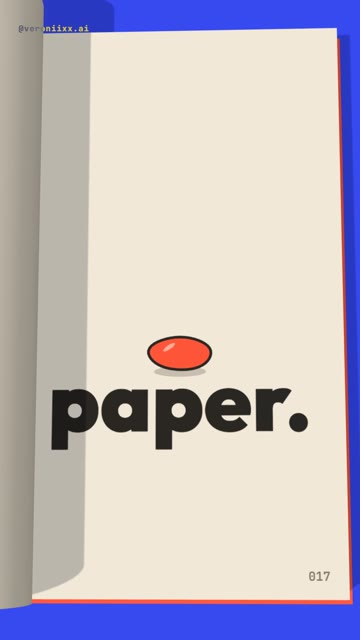
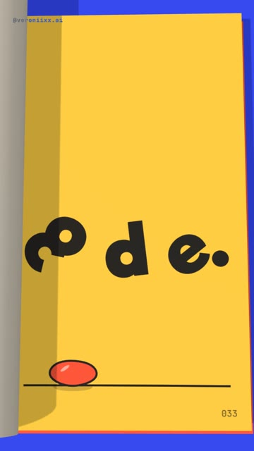
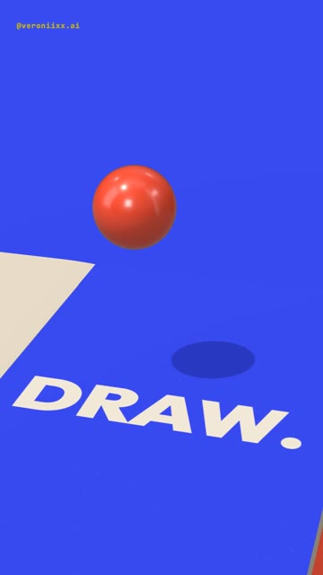
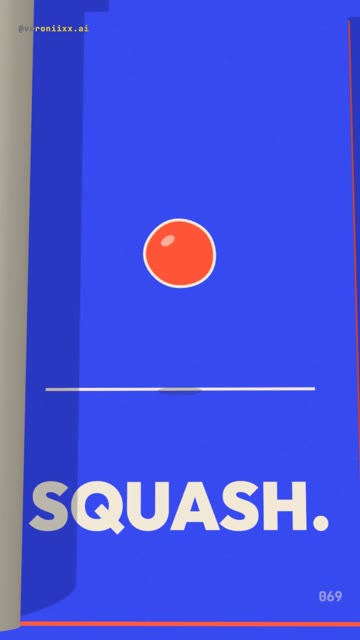
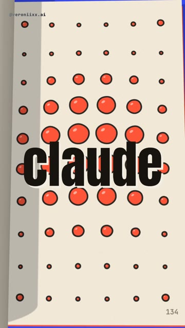

How I made a 19-second showreel inside a flipbook: a hand-drawn ball bounces page by page, smashes a word, jumps out of the paper as a real 3D ball and falls back into the drawing. 157 pages, it never ends. No editing app, even the music and every page sound are code. The full brief, ready to paste. Windows and Mac.





Part 3 of the red ball. This time the ball lives on paper: a real 3D flipbook flips the whole time, and every page is a frame drawn by code. Claude writes the drawings, the book, the timing and the music. You write the words.
One schedule drives everything: a list of times when each page turns. Every page shows the drawing at the moment it was revealed, so the animation plays exactly like a paper flipbook, and the same list places a paper flip sound on every turn. Change the schedule and the whole reel speeds up or slows down in sync.
My-Reel-Studio, so open it and start from FIRST-REEL.md.Windows Press Win, type PowerShell, open it.
Mac Press Cmd + Space, type Terminal, open it.
Windows Paste one line at a time. Answer Y when asked.
winget install -e --id OpenJS.NodeJS.LTS winget install -e --id Git.Git winget install -e --id Python.Python.3.13 winget install -e --id Gyan.FFmpeg
Mac Homebrew first, it will ask for your password. At the end it prints two lines under “Next steps”: run them, then run the second command.
/bin/bash -c "$(curl -fsSL https://raw.githubusercontent.com/Homebrew/install/HEAD/install.sh)"
brew install node git python ffmpeg
npm install -g @anthropic-ai/claude-code
Prefer an app to a terminal? Install Claude from claude.ai/download, it has a Code tab that does the same thing.
mkdir flipbook-reel\ncd flipbook-reel\nclaude
Set up a motion project in this folder. 1. Install Remotion (React 18 + TypeScript) with @remotion/three, three and @react-three/fiber. 2. Check that Python has numpy and scipy. Install what is missing. 3. Check that ffmpeg works from the terminal. 4. Build a test composition, 1080x1920, 60 fps: a three.js scene with a closed book lying on a blue desk, seen from above, soft daylight from the upper left with real shadows. Draw a red ball on its top page with a canvas texture. Render one frame to PNG with the GL backend set to "angle" and show me the path. If something is missing, install it yourself and tell me what you installed. If something fails, find the cause and fix it.
Words in square brackets are mine: put your own.
Build a vertical showreel in Remotion, with three.js for the 3D. 1080x1920, 60 fps, 19.2 seconds, a seamless loop with no ending. All text in English. Keep text out of the top 220 px and the bottom 380 px (the Instagram interface). THE IDEA The whole reel is one real 3D flipbook lying on a desk. It never stops flipping. On its pages a hand-drawn red ball is animated page by page, like a real flipbook, and the ball makes every transition. At one moment it jumps out of the paper as a real 3D ball, and later falls back into the drawing. THE LOOK Palette: cream paper #F3EEE4, tomato #FF5233, cobalt desk #2B45FF, butter #FFD23F, ink #17140F. Soft daylight from the upper left, real shadows, no tone mapping (it turns cobalt into lavender). Every page is a canvas texture: paper grain, ink lines 6 px, the ball filled tomato with a small white highlight. The lines wobble a little from page to page (draw the circle with a slightly different radius noise on every page), so it feels hand drawn. A page number in the corner. Font: Outfit 900 on the pages, Anton for the big word in the drop. THE BOOK Pages are 9:16, hinged on the left. A turning page is a bent plane: the far edge lifts first and the paper curls over, it never stretches. The page block under the top page is a bit smaller and lower than the page, so it never shows through at the spine. The top page casts a real shadow on the next one while it turns. Already turned pages pile up on the left. THE SCHEDULE Write one list of times when each page turns. Each page shows the drawing at the moment it was revealed. Normal pace: a page every 3 frames (at 30 fps). Bursts: 4 pages in 6 frames. Riffle: a page every frame. Use the same list for the picture and for the page sounds. THE TIMELINE (150 BPM: one beat = 12 frames at 30 fps; work in 30 fps units and render at 60 fps) 1. HOOK (0-2.8 s). The camera looks down at the book. The drawn ball bounces on a word and lands on it exactly on every beat, with squash on contact and stretch in the air. On every beat a new page color and a new word: [this / is / not / paper. / it's / code.]. 2. SMASH (2.8-4.4 s). The ball lands hard on [code.]: the letters fly apart and fall onto a drawn floor line. Three bounces, then the ball grows in the middle of the page as if it comes toward you. 3. OUT OF THE PAGE (4.4-7.2 s). The drawn ball disappears and a real glossy 3D ball rises out of the page at the same spot and size. The camera drops low and orbits the book. The ball hits the book four times on the beat, and every hit flips a burst of pages with one big word: [DRAW. / FLIP. / BOUNCE. / REPEAT.]. 4. BACK INTO THE DRAWING (7.2-9.6 s). The 3D ball shrinks to the drawn size and lands exactly where the drawing continues. The camera is back above the book. One animation principle per beat, with its word: [SQUASH. / STRETCH. / SPIN. / SPLIT.]. On the last beat the two halves meet and the ball grows until the page is all tomato. 5. MULTIPLY (9.6-12 s). Cream balls on tomato pages, each bouncing in its own cell: x2, x4, x8, x16, x32, x64, doubling on every beat. Pages flip faster and faster, the last half second is a riffle. 6. DROP (12-15.2 s). The word [claude] stands still in the middle. The book keeps flipping and the camera cuts every half beat to a new angle: top, low left, close, low right. Every half beat a new drawing on the pages: a ball planet with a ring, ripples, a grid wave of balls, a spiral, a loop with a trail, a sunrise. The desk color changes on every cut. The word flips black / cream on every cut and bounces a little. 7. END (15.2-19.2 s). A short riffle stops on the last page: [made by / claude opus / 5.5] and a comment field that types [your word]. A small ball bounces on the send button on every beat. Then the last page turns and under it is the very first page: the last frame is the first frame. STYLE On every hit the whole frame punches in by 3% and settles, no shake. No blur on text. SOUND (synthesize in numpy, no samples, no tracks) Mesmerizing and calm before the drop, full on the drop. C major / A minor, 150 BPM, chords Cmaj7 / Em7 / Am9 / Fmaj7#11, one bar each. Plucked strings made with Karplus-Strong on sixteenths with a ping-pong echo, a wordless choir pad through vowel formants, a warm sub. A soft paper flip on every page turn from the same schedule, a rubbery bonk every time the drawn ball touches the line, a deep thud on the paper block for every 3D hit, cartoon boings for squash, stretch, spin and split, a swarm of tiny pops for the multiplying balls, key clicks for the typing. On the drop: kick, bass, finger snaps, shaker, sidechain the music. Reverb by convolution with decaying noise, normalized. Master to -14 LUFS, peak below -1 dB. CHECK BEFORE YOU SAY DONE 1. Storyboard first: real frames from the code, 3-5 per transition. 2. A draft at 540x960 with sound. 3. Check the difference between neighbouring frames: a big jump must be a page turn or a beat. 4. Compare the first and the last frame: the loop must not jump. 5. Then the final 1080x1920. Tell me what you checked and what I should watch for in motion.
Watch the draft on your phone, on repeat. Then send notes like these. The first three are almost word for word what I wrote while making this reel: it started as a reel about light, then about paper, and only then became a flipbook.
I don't like these colors. Make a beautiful showreel and invent new transitions.
The page flipping where the ball bounces is really cool. Make the whole reel about that, the rest is weak.
There is a black line along the left edge of the page. Find what shows through and fix it.
Replace the words with mine: [your six hook words], [the word the ball smashes], [four words for the hits], [your comment word]. Keep one word per beat.
Yes. Change the words and the colors. The ball can be your product, and the last page can be your logo.
No. You need to know what you want to see and say it clearly. Claude draws every page, builds the book and writes the music from code.
Copy it and paste it to Claude with the words “here is the error, fix it and continue”.